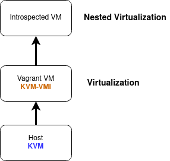
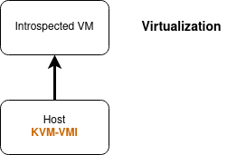
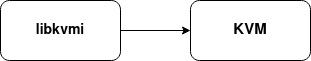

Setup¶
Cloning the sources¶
First let’s make sure that we have the repository, on the right branches.
If you haven’t cloned KVM-VMI yet, use the following command:
$ git clone https://github.com/KVM-VMI/kvm-vmi.git --recursive
$ cd kvm-vmi
$ git checkout master
$ git submodule update
This setup will help you configure 3 components:
KVMQEMULibVMI
Option 1: Vagrant - Virtual Machine based setup¶
This guide will help you setup a KVM-VMI development environment,
contained in a virtual machine, on KVM.

Vagrant is a tool that helps create reproductible dev environment. A Vagrant setup is available for KVM-VMI, and it will configure and install all the components as well as a test virtual machine for you.
Go to kvm-vmi/vagrant and follow the instructions there.
Otherwise, keep reading
Option 2: Bare-metal setup¶
This guide will help you setup KVM-VMI directly on your system.

KVM¶
You will have to compile and install an entire kernel. It is not possible to compile the KVM modules using an “out-of-tree” build.
First we need to install the kernel build dependencies
$ sudo apt-get install bc fakeroot flex bison libelf-dev libssl-dev ncurses-dev
Let’s configure the kernel
$ cd kvm-vmi/kvm
$ make olddefconfig
$ make menuconfig
Apply the following configuration:
CONFIG_KVM=m
CONFIG_KVM_INTEL=m
CONFIG_KVM_AMD=m
CONFIG_KSM=n
CONFIG_REMOTE_MAPPING=y
CONFIG_KVM_INTROSPECTION=y
Build and install the kernel
$ make -j4 bzImage
$ make -j4 modules
$ sudo make modules_install
$ sudo make install
Reboot.
Run uname -a
You should be on kernel 5.0.0-rc7 (kvmi v6)
QEMU¶
Dependencies
$ sudo apt-get install libpixman-1-dev pkg-config zlib1g-dev libglib2.0-dev dh-autoreconf libspice-server-dev
Configure, build and install QEMU
$ cd kvm-vmi/qemu
$ ./configure --target-list=x86_64-softmmu --enable-spice --prefix=/usr/local
$ make -j4
$ sudo make install
Your modified QEMU has been installed at /usr/local/bin/qemu-system-x86_64
Note: You might need to modify your Apparmor configuration to allow its execution.
Preparing a domain¶
The Virtual Machine should be available in libvirt.
Modify the XML configuration as the following.
<domain type='kvm' xmlns:qemu='http://libvirt.org/schemas/domain/qemu/1.0'>
<qemu:commandline>
<qemu:arg value='-chardev'/>
<qemu:arg value='socket,path=/tmp/introspector,id=chardev0,reconnect=10'/>
<qemu:arg value='-object'/>
<qemu:arg value='secret,id=key0,data=some'/>
<qemu:arg value='-object'/>
<qemu:arg value='introspection,id=kvmi,chardev=chardev0,key=key0'/>
<qemu:arg value='-accel'/>
<qemu:arg value='kvm,introspection=kvmi'/>
</qemu:commandline>
...
<devices>
<emulator>/usr/local/bin/qemu-system-x86_64</emulator>
Note that you need to add xmlns:qemu='http://libvirt.org/schemas/domain/qemu/1.0'.
Validate the new configuration and start the domain.
libkvmi¶
libkvmi is a wrapper over the low-level KVMi API (ioctls)
You should use this library to build your applications.

$ git clone https://github.com/bitdefender/libkvmi --branch kvmi-v6
$ ./bootstrap
$ ./configure
$ make
$ sudo make install
Libkvmi examples¶
Run the example provided by libkvmi: hookguest-libkvmi
$ cd libkvmi/examples
$ ./hookguest-libkvmi /tmp/introspector
Give it at least 10 seconds (waiting on QEMU to connect to the socket /tmp/introspector) and you should see some output ! :tada:
LibVMI¶
LibVMI is a VMI library providing a unified access on Xen and KVM, as well as a semantic layer.
Dependencies
$ sudo apt-get install build-essential gcc libtool cmake pkg-config check libglib2.0-dev libvirt-dev flex bison libjson-c-dev
Build and install
$ cd kvm-vmi/libvmi
$ mkdir build
$ cd build
$ cmake .. -DCMAKE_INSTALL_PREFIX=/usr/local -DENABLE_KVM=ON -DENABLE_XEN=OFF -DENABLE_BAREFLANK=OFF
$ make -j2
$ sudo make install
JSON profiles¶
TO use all the features of LibVMI, you need a Rekall/Volatility profile.
You can generate one like this:
Run
./examples/vmi-win-guidand note theKernel filenameandPDB GUIDfields.Use Volatility3 to extract the JSON profile
$ git clone https://github.com/volatilityfoundation/volatility3
$ cd volatility3
$ virtualenv -p python3 venv
$ source venv/bin/activate
(venv) $ pip install -e .
(venv) $ python volatility/framework/symbols/windows/pdbconv.py -o profile.json -p <Kernel filename> -g <PDB GUID>
Debug output¶
The debug output can be configured via CMake.
The constants should be used from libvmi/debug.h
cd build
cmake .. -DVMI_DEBUG='(VMI_DEBUG_KVM | VMI_DEBUG_DRIVER)'
make
sudo make install
Toggling the debug output is controlled by an environment variable: LIBVMI_DEBUG
$ LIBVMI_DEBUG=1 ./build/examples/vmi-process-list -n winxp -j /etc/libvmi/winxp-profile.json
Go to LibVMI for the rest of the documentation.